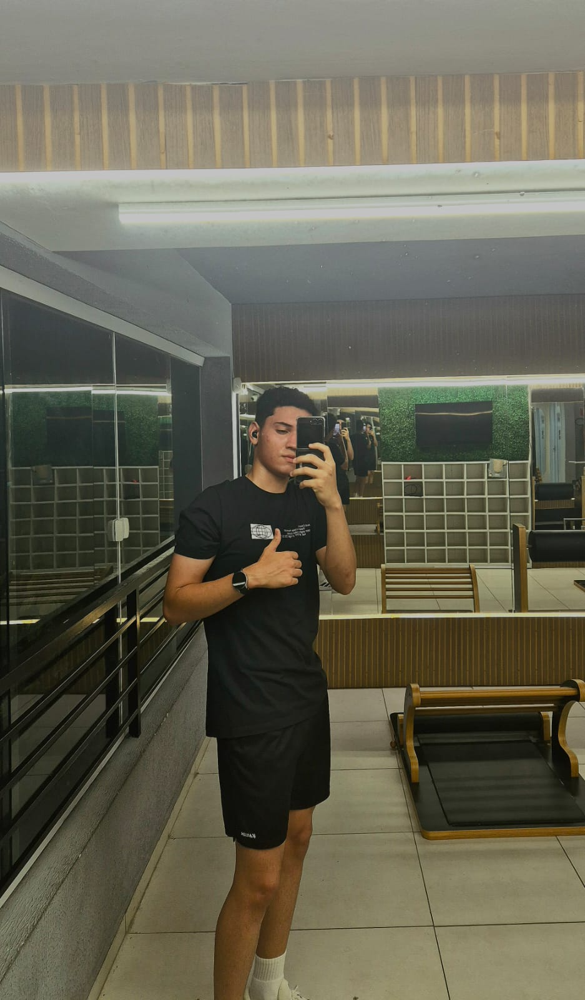

Um pouco mais sobre mim além do currículo

Sou estudante de Ciência da Computação em João Pessoa (PB), interessado por
desenvolvimento web e por transformar ideias em projetos reais.
Atualmente participo do Workshop Fábrica de Software na UNIPÊ,
onde estou desenvolvendo um sistema de gestão de membros em Django.
Meu time é o vasco.
Nas horas livres, gosto de ir para a academia, jogar jogos como valorant e assistir a series.
Um vídeo que gosto bastante atualmente: